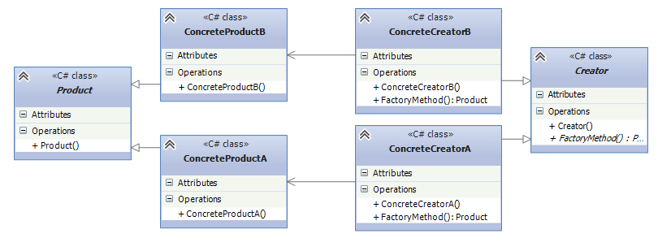

Фабричный метод
Фабричный метод (Factory Method) - это паттерн, который определяет интерфейс для создания объектов некоторого класса, но непосредственное решение о том, объект какого класса создавать происходит в подклассах. То есть паттерн предполагает, что базовый класс делегирует создание объектов классам-наследникам.
Когда надо применять паттерн
- Когда заранее неизвестно, объекты каких типов необходимо создавать
- Когда система должна быть независимой от процесса создания новых объектов и расширяемой: в нее можно легко вводить новые классы, объекты которых система должна создавать.
- Когда создание новых объектов необходимо делегировать из базового класса классам наследникам
На языке UML паттерн можно описать следующим образом:

Формальное определение паттерна на языке C# может выглядеть следующим образом:
abstract class Product
{}
class ConcreteProductA : Product
{}
class ConcreteProductB : Product
{}
abstract class Creator
{
public abstract Product FactoryMethod();
}
class ConcreteCreatorA : Creator
{
public override Product FactoryMethod() { return new ConcreteProductA(); }
}
class ConcreteCreatorB : Creator
{
public override Product FactoryMethod() { return new ConcreteProductB(); }
}
Участники
- Абстрактный класс Product определяет интерфейс класса, объекты которого надо создавать.
- Конкретные классы ConcreteProductA и ConcreteProductB представляют реализацию класса Product. Таких классов может быть множество
- Абстрактный класс Creator определяет абстрактный фабричный метод FactoryMethod(), который возвращает объект Product.
- Конкретные классы ConcreteCreatorA и ConcreteCreatorB - наследники класса Creator, определяющие свою реализацию метода FactoryMethod(). Причем метод FactoryMethod() каждого отдельного класса-создателя возвращает определенный конкретный тип продукта. Для каждого конкретного класса продукта определяется свой конкретный класс создателя.
Таким образом, класс Creator делегирует создание объекта Product своим наследникам. А классы ConcreteCreatorA и ConcreteCreatorB могут самостоятельно выбирать какой конкретный тип продукта им создавать.
Теперь рассмотрим на реальном примере. Допустим, мы создаем программу для сферы строительства. Возможно, вначале мы захотим построить многоэтажный панельный дом. И для этого выбирается соответствующий подрядчик, который возводит каменные дома. Затем нам захочется построить деревянный дом и для этого также надо будет выбрать нужного подрядчика:
class Program
{
static void Main(string[] args)
{
Developer dev = new PanelDeveloper("ООО КирпичСтрой");
House house2 = dev.Create();
dev = new WoodDeveloper("Частный застройщик");
House house = dev.Create();
Console.ReadLine();
}
}
// абстрактный класс строительной компании
abstract class Developer
{
public string Name { get; set; }
public Developer (string n)
{
Name = n;
}
// фабричный метод
abstract public House Create();
}
// строит панельные дома
class PanelDeveloper : Developer
{
public PanelDeveloper(string n) : base(n)
{ }
public override House Create()
{
return new PanelHouse();
}
}
// строит деревянные дома
class WoodDeveloper : Developer
{
public WoodDeveloper(string n) : base(n)
{ }
public override House Create()
{
return new WoodHouse();
}
}
abstract class House
{ }
class PanelHouse : House
{
public PanelHouse()
{
Console.WriteLine("Панельный дом построен");
}
}
class WoodHouse : House
{
public WoodHouse()
{
Console.WriteLine("Деревянный дом построен");
}
}
В качестве абстрактного класса Product здесь выступает класс House. Его две конкретные реализации - PanelHouse и WoodHouse представляют типы домов, которые будут строить подрядчики. В качестве абстрактного класса создателя выступает Developer, определяющий абстрактный метод Create(). Этот метод реализуется в классах-наследниках WoodDeveloper и PanelDeveloper. И если в будущем нам потребуется построить дома какого-то другого типа, например, кирпичные, то мы можем с легкостью создать новый класс кирпичных домов, унаследованный от House, и определить класс соответствующего подрядчика. Таким образом, система получится легко расширяемой. Правда, недостатки паттерна тоже очевидны - для каждого нового продукта необходимо создавать свой класс создателя.
Created with the Personal Edition of HelpNDoc: Free Qt Help documentation generator